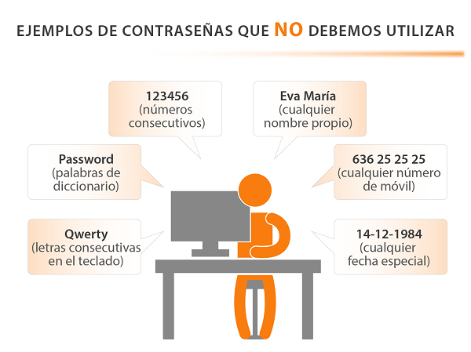

Cómo deben ser las contraseñas
Para crear una contraseña segura y robusta, deben tenerse en cuenta los siguientes factores:
- Debemos asegurarnos que la contraseña tenga:
- una longitud mínima de ocho caracteres,
- que combine mayúsculas,
- minúsculas,
- números y
- símbolos.
- No debemos utilizar como claves:
- palabras sencillas en cualquier idioma,
- nombres propios,
- lugares,
- combinaciones excesivamente cortas,
- fechas de nacimiento,
- No debemos usar claves formadas únicamente a partir de la concatenación de varios elementos
- Por ejemplo: “Juan1985” (nombre + fecha de nacimiento).

Como NO deben ser las contraseñas
Existen algunos trucos que nos permiten hacer contraseñas seguras y que a la vez no nos supongan un gran esfuerzo recordarlas:
- Cambiar las vocales por números
Mi familia es genial → M1 f4m1l14 3s g3n14l
- Utilizar reglas mnemotécnicas.
Por ejemplo, elegir la primera letra de cada una de las palabras de una frase que sea fácil de recordar para nosotros:
Con 10 cañones por banda, viento en popa: C10cpbvep
- Claves basadas en un mismo patrón, introduciendo ligeras variaciones para cada servicio.
Por ejemplo, tomando como base la contraseña anterior, añadir al final la primera letra del servicio utilizado en mayúscula:
Facebook → C10cpbvepF
Twitter → C10cpbvepT
Gmail → C10cpbvepG
- Dependiendo del servicio y de su importancia podemos utilizar claves más robustas o menos, para facilitar su memorización.
Para los servicios más sensibles, siempre podemos utilizar un generador aleatorio de contraseñas.
Vídeo: «Cómo generar contraseñas seguras»
Fuente: OSI-INCIBE